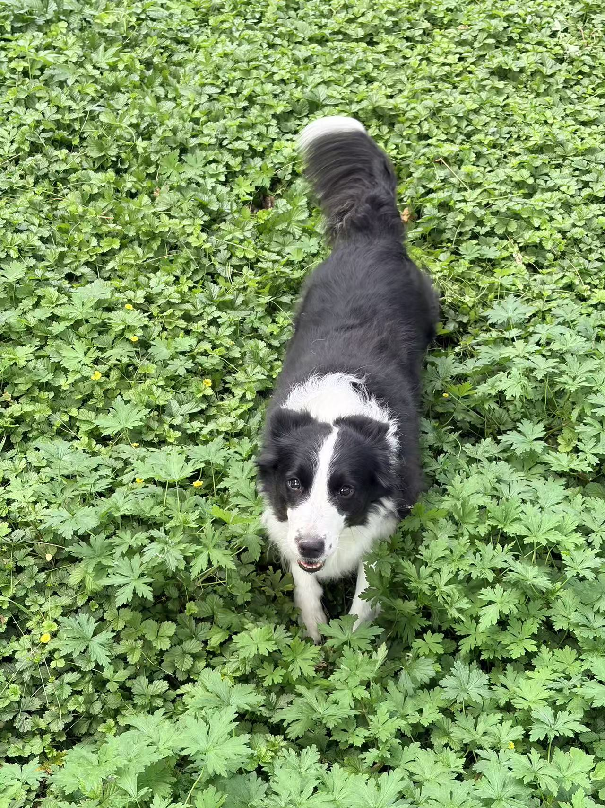

BODY · 健身
保持训练，保持热爱。
健身是我的兴趣之一。这里留给训练记录、阶段目标和每次进步。
训练记录 · 持续更新

A LITTLE ABOUT ME
我叫月色，正在自学编程，也喜欢骑摩托车、健身、学习英语。小春是一只边牧，是生活里的可爱搭档。
CURRENTLY
BODY · 健身
健身是我的兴趣之一。这里留给训练记录、阶段目标和每次进步。
训练记录 · 持续更新WORDS · 英语
记录最近学到的表达、单词和学习进度，把新知留在这里。
SAY HELLO
想一起聊聊，或者有什么小工具想法，欢迎找我。
微信：bagayalu312
邮箱：yuese2641@gmail.com